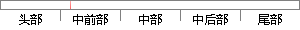

这种3D引擎包括两个可编程着色器：一个顶点着色器和一个像素着色器。
片段位置图

相似结果
相似片段：屏蔽设备驱动的具体实现,为引擎层提供统一的功能接口...顶点着色器和像素着色器的出现就是两个这样的例子。...两个可编程的着色器单元,一个顶点着色器和一个像素...
| 标题 | 《嵌入式窗口特效研究与实现》 |
| 对比库 | 中国学位论文全文数据库 |
| 作者 | 孙路 |
| 机构 | 华中科技大学 |
| 分类 | 计算机应用技术 |
| 年份 | 2009 |
| 相似率 | 80% （严重抄袭） |
※ 片段修改建议 ※
近似词参考：- 顶点：极点
- 包括：包罗 包孕 包含 囊括
- 这种：这类
系统自动生成语句：这类3D引擎包罗两个可编程着色器：一个极点着色器和一个像素着色器。
注：本片段修改建议为系统自动生成，仅供参考。